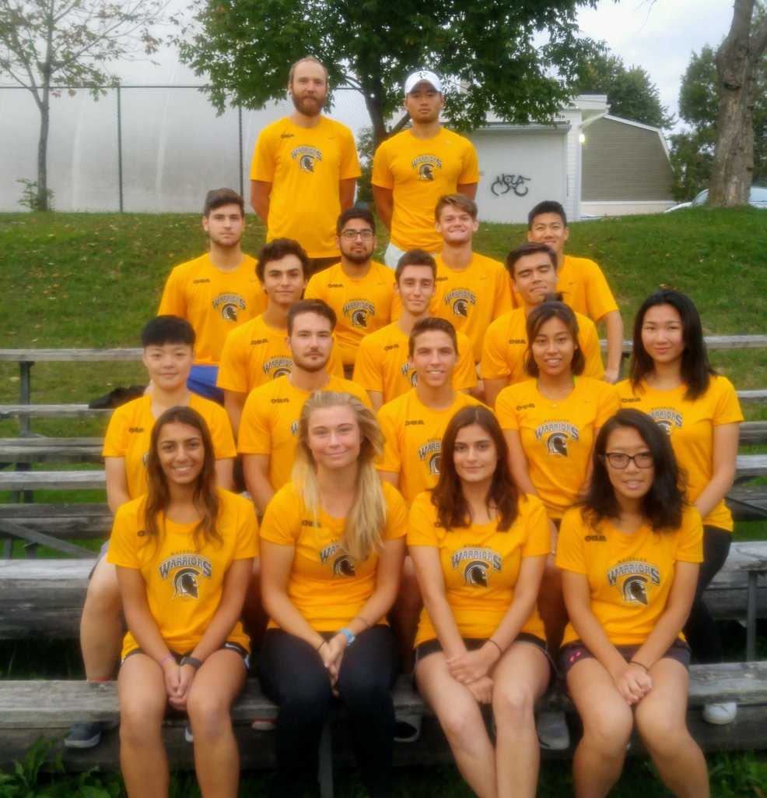
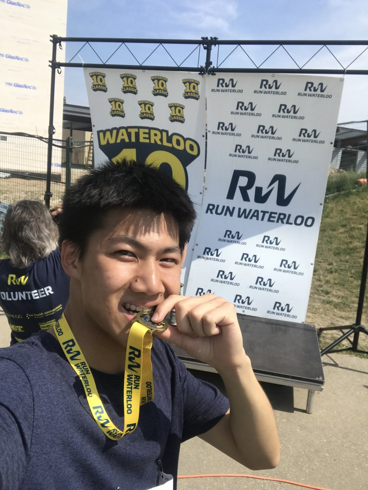

I am a self-taught programmer who learns by reading documentation 📖 and finding answers & resources from the open-source community. 🧡 Hover below:
Languages: C++, completed algorithm and data structure labs using objected-oriented programming C, completed concurrency assignments & labs using mutex and semaphores Python, used AI techniques based on edX's CS50 AI course R, for manipulating data and its dynamic time warping library for time series analysis MATLAB, for scientific computation including pattern recognition & structural analysis HTML, CSS, JavaScript, for creating a personal website like this! SQL, for examining databases Ruby for creating backend applications
Frameworks & Libraries: Rails, TensorFlow
Tools: Git, Valgrind, for debugging C assignments RSpec, for TDD and unit testing
Sample Projects: Traffic (AI), Hangman, Matrix Stiffness, Spell Manager (in progress)
I had no business background, but I wanted to explore entrepreneurship and turn ideas 💡 into actions. So I did. I and my team pitched 🎤 our idea of creating an online handicraft platform - Craft Collective at the 2019 Hult Prize.🏅 Our detailed business model 📊 and user analysis helped us advance to the final round on campus, beating 20+ teams along the way.
I am a student athlete playing tennis 🎾, a sport that I've dedicated since the age of 10. Every tennis match and every run 🏃 is a challenge, but I enjoy it. Go Warriors! 💪 In 2018, I became an officially certified tennis coach, a dream come true.
 Social good means a lot to me. I joined the podcast crew 🎙 at Ideas Without Borders, an EWB initiative during the summer of 2018 advocating systems thinking 🤔 not only for engineers, but for university students at large. During my co-op in China, I volunteered as an English Teacher at Stepping Stones, teaching migrant Chinese students English.

I am adventurous. I travel around the world ⛰ 🕍 (often solo) with 21 on the list currently, many of which took place during my exchange in the UK. Crazy or not, I hitchhiked from Leeds, UK to Cologne, Germany within 36 hrs ⏳ for a charity.


Email: sjtan@uwaterloo.ca